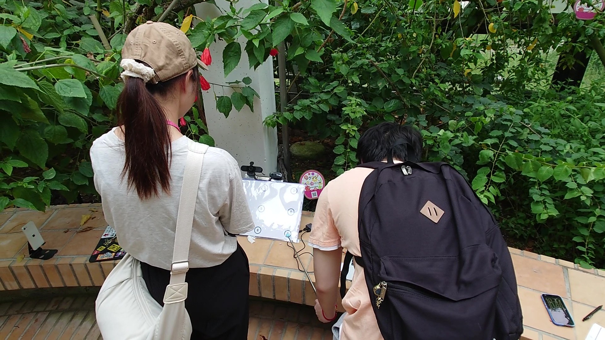
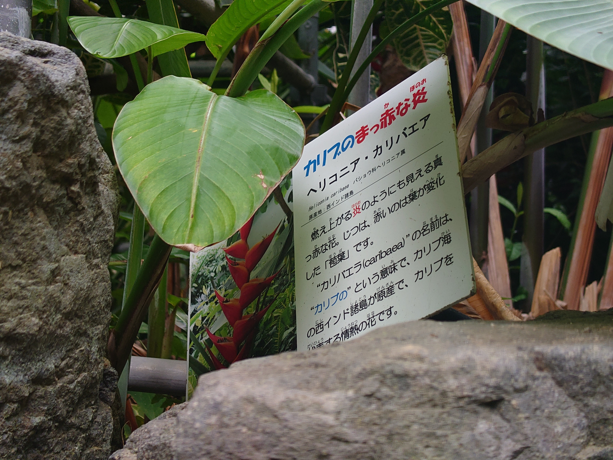
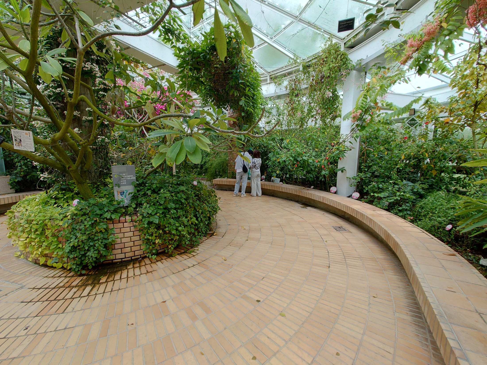
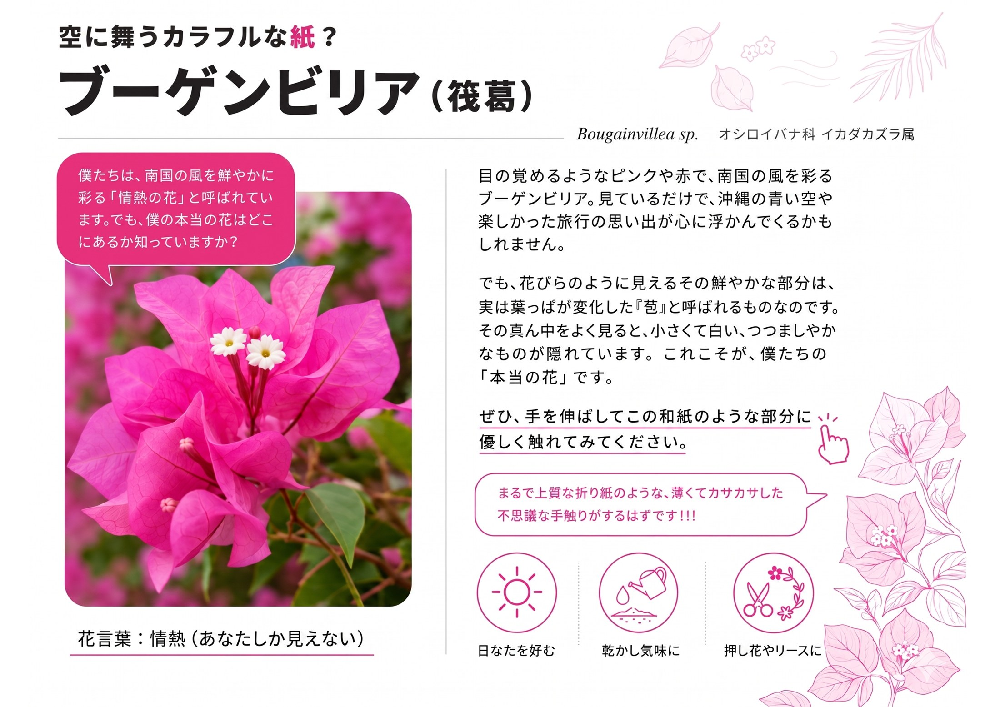
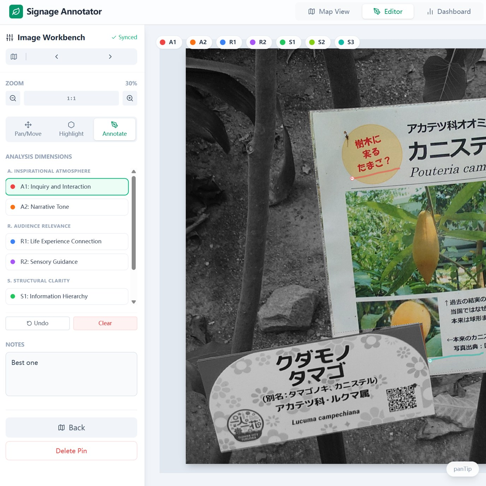
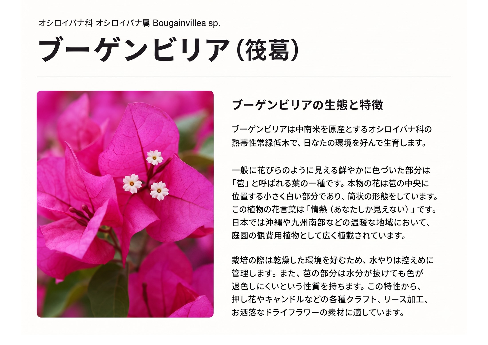
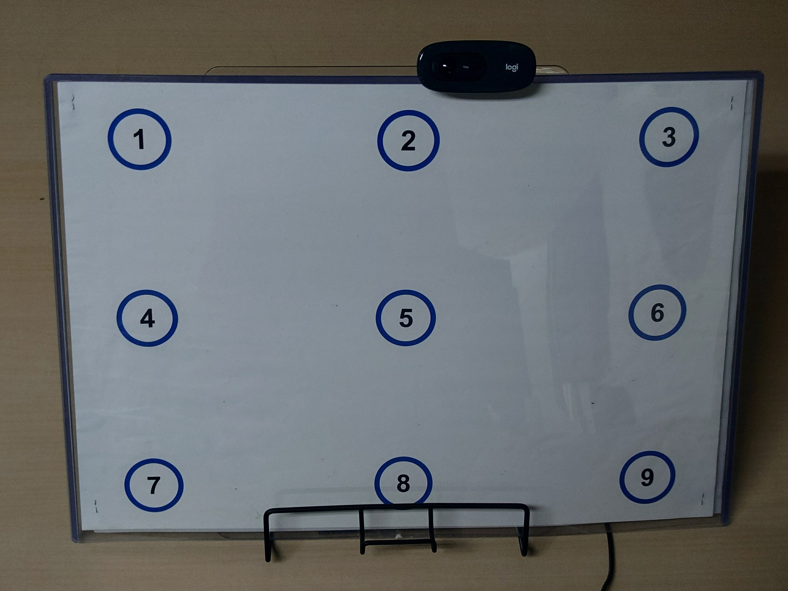

2024.11课题收集
GGJ2024通过实地调查、焦点小组与 KJ 法收集用户反馈。
问题入口明确植物园温室解说标识在阅读范围与记忆保持上的初始课题。
游客来到植物园的目的不仅仅是观赏——更是为了学习
将"学习与探索"视为参观植物园的核心动机
博物馆学习研究经典文献——来园者的核心动机是学习与探索

植物园温室中的解说标识是游客获取植物知识的主要渠道
内容过密、缺乏视觉引导，游客难以有效阅读
解说标识的版面设计与视线引导优化


“标识被设置，但不等于被阅读”——超过 90% 的旧标识完全失效
游客在视线接触的前 10 秒即产生认知疲劳并放弃阅读
缺乏对普通游客日常认知经验的过渡，线性灌输导致阅读中断

设计改良缺乏客观、细粒度的生理量化指标
高度依赖定性问卷与回顾访谈，无法做到精准测量
不能在自然阅读状态下，精准追踪不同版面区域的眼动流向
本研究旨在通过提出共创导向的设计原则，并开发开源、低成本的非接触式眼动追踪系统，建立从“发现问题 → 提炼原则 → 定量诊断”的完整评价与验证闭环。帮助解说标识实现从静态的“知识陈列板”向“体验诱导型媒介”的转型。
A/R设计是否能在游客与标识接触的黄金前 10 秒（视觉入口期）内，有效提高游客对核心文字内容的整体空间覆盖率，降低盲目扫视率？
EVALUATION METRIC: TEXT COVERAGE (10S)通过精确分割 A 区域（启发背景）与 R 区域（感官与栽培用途）的语义兴趣区（AOI），检验实验组设计是否实现了注意力从背景噪声区向关键行为诱导区的结构化转移。
METRIC: SEMANTIC AOI SHARE揭示以“问句”为首的启发性氛围（A）和以“感官用途”为首的观众关联（R）如何相互支撑，在长效阅读流中共同充当视觉引导漏斗与动作诱导锚点。
ANALYSIS: GAZE DYNAMICS MODEL综合 Tilden (1957) 的解说六原则、Ham (2016) 的 EROT 解释机制、与 Serrell (2015) 的微观排版规约。锁定视觉注意力瓶颈与游客认知负荷的对立关系，推导出了适用于动态园艺环境的低负荷传达框架。
在九州大学举办多轮 Global Goals Jam 共创设计坊。通过半结构化访谈与市民发声，对旧标识的阅读障碍进行扎根理论主轴编码，归纳得出以下 5 大核心认知痛点分类：
拒绝平铺直叙的客观描述，通过问句启发（如“你能在这片叶子下找到什么？”）或情感隐喻，创造亲和的注意导入切面，诱导游客停下视线并切入深度加工。
将植物客观性状映射到日常感官经验（如触觉对比“干巴巴/肉乎乎”、手工原料用途），唤醒知觉。这是吸引持续阅读、防止注意流失的决定性视觉抓手。
采用分区模块设计（如左右解耦框架）、显著的层级字重与直观功能图标，避免大面积文字疲劳。优化短文本的视觉流通道，实现高效获取。

A/R/S 原则的版面语义映射样例 (实验组 A2)基于自主开发的 Signage Annotator 多人协同标注平台，对温室大棚内现存 70 块传统解说标识进行系统审计。结果显示 91.4% 的旧标识在 A（启发性）与 R（关联性）维度上完全缺位，证明了进行设计重构与优化的紧迫必要性。

传统的全通栏大段正文排版，缺乏视觉分区，导致游客无焦点地随意浏览。

整合大气泡问句引导（A）与感官用途框（R），运用模块设计引导动作映射。
基于 WebGazer.js 研发 non-contact 视线估计 system SIGN Visual Attention。仅利用设备自带摄像头实时捕获面部反射。开发手动漂移补偿与光照过滤算法，彻底过滤室外反光畸变。
游客在测试前依次观看纸质标识四周的 9 个物理定标点。系统计算头部姿态，并利用单应性矩阵（Homography）将屏幕空间估计点投影映射到纸质标识的 2D 坐标系上。

.png)


文字区域完读率网格差分分析表明，在前10秒黄金阅读窗口中，实验组的文字区域完读率均值由对照组的 38.6% 提升至实验组 of 45.3%（提升了 6.7pp）。9 名被试中有 6 名呈现出显著上升趋势，中位提升幅度达到 +8.2pp。这证明了实验组成功将视线从盲目扫视引流至感官行动区。
对各语义兴趣区（AOI）进行分类分析，结果证实了 Audience Relevance（R原则，感官与栽培用途） 获得了极强的注意力捕获效能，注意力从其他装饰区（21.2% -> 8.9%）成功引流。而 Inspirational Atmosphere（A原则）主要充当阅读情境的引导漏斗。
建立标准化转化闭环，将杂散的用户行为数据或共创意见，结构化输出为具备证据支撑的解说设计系统参数。
A/R/S 设计优化原则突破了场域限制，可直接移植运用至科学馆、历史博览会和自然博物馆等非正式教育界面中。
开源非接触式视线系统 SIGN Visual Attention 证明了利用常规摄像头和大棚本地计算开展学术分析的轻量化潜能。
引入认知负荷理论 (Sweller, 1988) 与双重编码理论 (Paivio, 1971)，研究如何通过合理的图文匹配优化大脑记忆编码强度。
结合更长期的动态视线数据流，在游客离开温室 10-30 分钟后开展延迟记忆提取实验，探明注视时间与最终知识存留的关系系数。
从单体标识研究过渡到系统布局（空间动线引导、 inter-sign continuity），研究标识群的空间排布对游客在大温室中建立连贯心智地图的价值。
Bitgood, S. (2013). Attention and value: Keys to understanding museum visitors. Left Coast Press.
Ham, S. (2016). Interpretation: Making a difference on purpose. Fulcrum Publishing.
Paivio, A. (1971). Imagery and verbal processes. Holt, Rinehart, and Winston.
Serrell, B. (2015). Exhibit labels: An interpretive approach. Bloomsbury Publishing.
Spooner, S. L., et al. (2024). Using eye-tracking to create impactful interpretation signage for botanic gardens. Journal of Zoological and Botanical Gardens, 5(3), 434-454.
Sweller, J. (1988). Cognitive load during problem solving: Effects on learning. Cognitive Science, 12(2), 257-285.
Tilden, F. (1957). Interpreting our heritage. University of North Carolina Press.